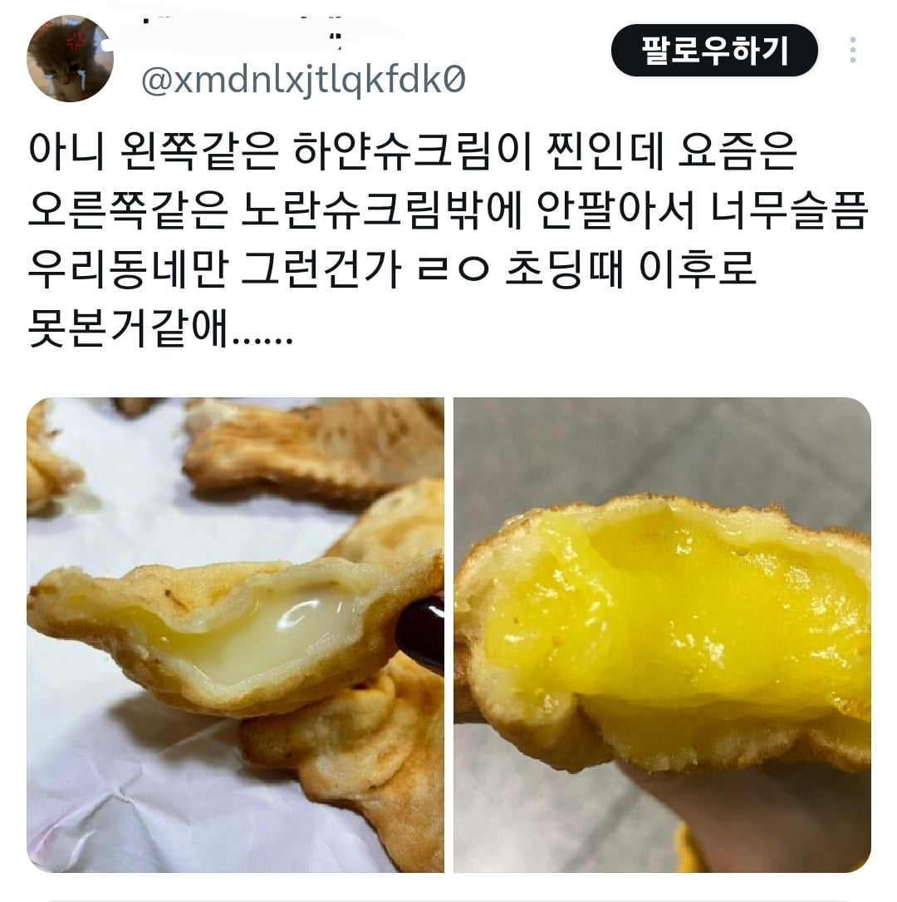
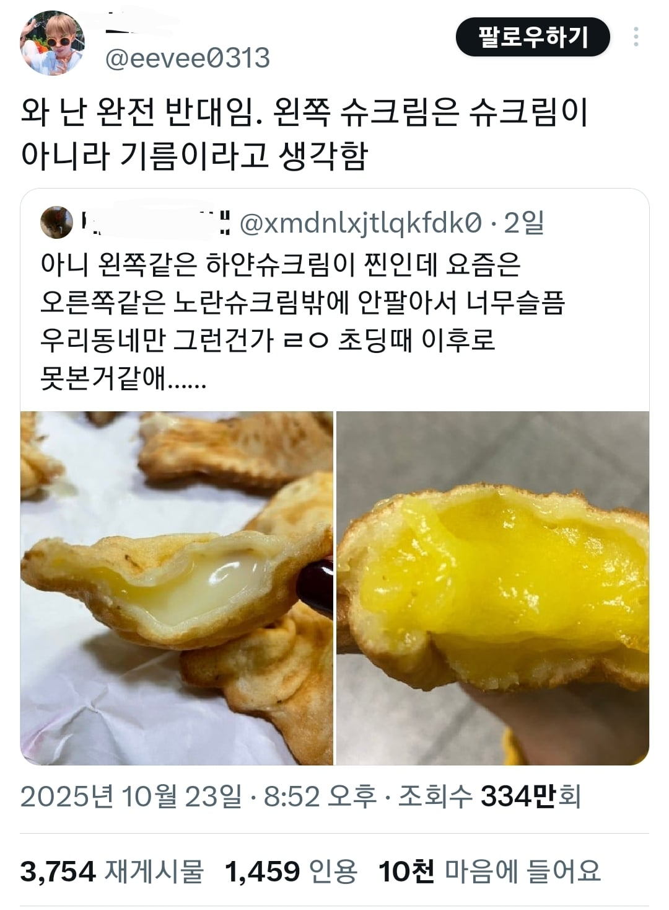

전란액이냐 난황액이냐 차이인가?
ㅇㅇ 맞음 전란쓰면 아이보리색남
슈크림이면 오른쪽 색이 맞긴함 ㅋㅋ
오른쪽 슈크림은 찐이 아니라 설탕+옥수수전분에 슈크림향이라며
슈크림이라고도 불리는 커스터드 크림이 원래 설탕+전분(+우유) 베이스인건 맞음. 거기서 달걀 노른자와 바닐라 향료가 들어가서 색과 향을 내게 되는거임
왼쪽 좀 야한데? 붕어빵 질싸 야짤 생각난다
수제 슈크림 줄까?
하얀크림 잘못 된 슈크림이라 생각함
뭐가 더 맛있냐가 어니라 용도와 온도에 맞게 전분이라도 더 넣어서 굳게 만들어야지
커스터드 크림이 노란색이고 슈크림이면 흰색이지?
커스터드 크림을 슈(양배추)모양의 과자안에
채운걸 우리나라는 슈크림이라고 부르다가
커스타드 크림을 슈크림이라고 부르기 시작했음
나는 좌측 슈붕일까봐 슈붕 절대안먹음
오른쪽이 오리지널이잖음
왼쪽은 휘핑크림 오른쪽은 커스터드인가
흠 제가 슈크림 만들어옴 ㄱㄷ
2분 지났는데?
반찬이 시원찮아서
너준다는건 아니었음
쌋네
나한테 나오는게 슈크림이었구나


오른쪽은 커스터드라고 보긴해야지 ㅋㅋㅋㅋㅋ
요세 우유슈크림 붕어빵 1개 1000원이던데 비씨서 손떨려서 못먹겠저라
커스터드는 노란색이긴 한데
왼쪽껀 슈붕이 아니라 주인장의..
둘다 식물성유지 아닌가
근데 사실상 슈크림은 원래 슈라는 디저트에 크림넣은거고 우리가 아는 슈크림은 커스터드가 맞지
하얀색은 연유로 만들던가?
버나나 슈붕
왼쪽꺼 냉동으로 먹으면 나오는색인데 맛없음
어차피 노근본이 거기서거기지 ㄹㅇ ㅋㅋ
아 옛날에 슈크림 많이 만들었지
그 친구들은 어디있으려나
예? 친구들이랑 만드셨다구요?
다들 안에해도 ...괜찮다구해서 ..
둘다 아님
뜨거운슈크림 개노맛
녹찐한 정액같이 생겼네
하얀슈붕이 있었어?